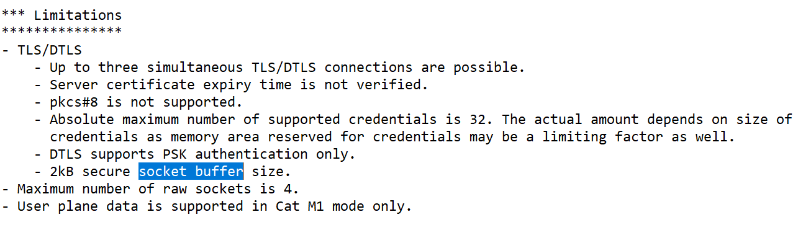

Limiting the Shadow Document size¶
The nRF9160 DK has a size limit of 2303 bytes for receiving TLS packages.
See the following contents of the mfw_nrf9160_1.2.0_release_notes.txt file in nRF9160 modem firmware binaries (v1.2.0) for reference.

nRF9160 Modem firmware 1.2.0 release notes content¶
Bifravst sets up an IoT rule, which only publishes the cfg section of the shadow document to a separate topic $aws/things/<thing name>/shadow/get/accepted/desired/cfg when devices receive their state after publishing an empty message to $aws/things/<thing name>/shadow/get.
The published object might be empty as shown, if the device has no shadow or if the configuration is not set:
{}
Otherwise, the message will contain one top-level key cfg and the desired device configuration as shown:
{
"cfg": {
"gpst": 720,
"celt": 600,
"act": false,
"actwt": 60,
"mvres": 60,
"mvt": 3600,
"acct": 1.2
}
}